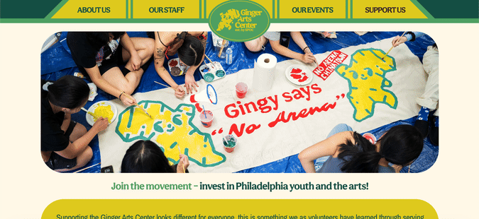

Ginger Arts Center Website
Site
2024, Professional Project
> Made with: ReadyMag
2024, Professional Project
> Made with: ReadyMag
Ginger Arts Center is a volunteer-run community youth arts center in Philadelphia Chinatown. This site's whimsical design honors the space's creative atmosphere, attracting youth audiences and defying conventional standards to create unique and joyful user experiences.

The Synthesis Lab
Site
2023-2024, Developed @ PWL
> Made with: Vue, Firebase
2023-2024, Developed @ PWL
> Made with: Vue, Firebase
The Synthesis Lab provides a platform for students in discussion-based courses to more easily navigate the synthesis-making process. Within one integrated interface, students can access, filter, and categorize Hypothes.is annotations, as well as write notes and begin essays.

i3DGS
Code Site
2022-2024, Developed @ PSL
> Made with: Three.js, Tweakpane
2022-2024, Developed @ PSL
> Made with: Three.js, Tweakpane
i3DGS is an online platform designed to educate users on the principles of 3D/polyhedral graphic statics. Users can experiment with a variety of different examples and see how certain interactions affect their reciprocal polyhedral diagrams in real-time.

Aggregation of Our Own
2024, CIS 4500 Final Project
> Made with: React, MySQL
2024, CIS 4500 Final Project
> Made with: React, MySQL
Aggregation of Our Own (AggO3) is a web app built to help users analyze, interact with, and query a database of over 400,000 works from open-source fanfiction repository Archive of Our Own. Users can also play an interactive guessing game with multiple difficulty levels to test their knowledge on character relationships in media.

FamilyHub
Code Info
2023, CIS 4120 Final Project
> Made with: Next.js (React), Figma
2023, CIS 4120 Final Project
> Made with: Next.js (React), Figma
FamilyHub is a mobile social media app designed to help families or friend groups stay connected over long distances. After creating or joining a group, users can coordinate events, make polls, and share media memories private to that group.

Text Art Generator
Code Site
2023, Personal Project
> Made with: p5.js
2023, Personal Project
> Made with: p5.js
This generator can take in any image and output the same image but recreated in rows of only ASCII/Unicode characters. Users can choose the default density mapping or use their own, set the direction of the mapping, select resolution qualities, and ultimately save the ASCII/Unicode art as an image or copy it as text.

Art of the Web Portfolio
Site
2022, DSGN 1020 Final Project
> Made with: HTML/CSS
2022, DSGN 1020 Final Project
> Made with: HTML/CSS
This site borrows from vibrant retro aesthetics to create a unique walkthrough experience as users navigate the portfolio of Internet art I created for DSGN 1020: Art of the Web.

Pay Attention to Me
Site
2022, DSGN 1020 Project
> Made with: JavaScript, HTML/CSS
2022, DSGN 1020 Project
> Made with: JavaScript, HTML/CSS
Pay Attention to Me is a psychological horror web game that plays with patterns of user interaction. While the site instructs you only to follow its directions, your newly made friend will give you different ones... that get more and more frantic as you try to accommodate the narrator. Who will you listen to?

Typing...
Site
2022, DSGN 1020 Project
> Made with: p5.js
2022, DSGN 1020 Project
> Made with: p5.js
This generative art experiment allows users to create unique, downloadable artworks as they type. The position, size, color, and rotation of each character is randomized.

Avatar Selector
Site
2022, DSGN 1020 Project
> Made with: only HTML/CSS
2022, DSGN 1020 Project
> Made with: only HTML/CSS
This avatar customizer operates using only CSS selectors (no JavaScript code). Create your own royal avatar from CSS elements by clicking different radio buttons.

3D Render Engine
Code
2022, Personal Project
> Made with: Java, Java Swing
2022, Personal Project
> Made with: Java, Java Swing
This 3D render engine allows users to visualize and customize 3D objects. Users can also "inflate" the initial tetrahedron to create sphere approximations.

Snake
Code
2021, CIS 1200 Final Project
> Made with: Java, Java Swing
2021, CIS 1200 Final Project
> Made with: Java, Java Swing
Snake is a game where the player controls a snake using keyboard keys. When the snake "eats" red apples, it grows longer; when the snake "eats" golden apples, it moves faster. The goal of this game is to not let the snake hit a wall or itself, or it will die and the game will be over. The number of apples collected add to a player's score.